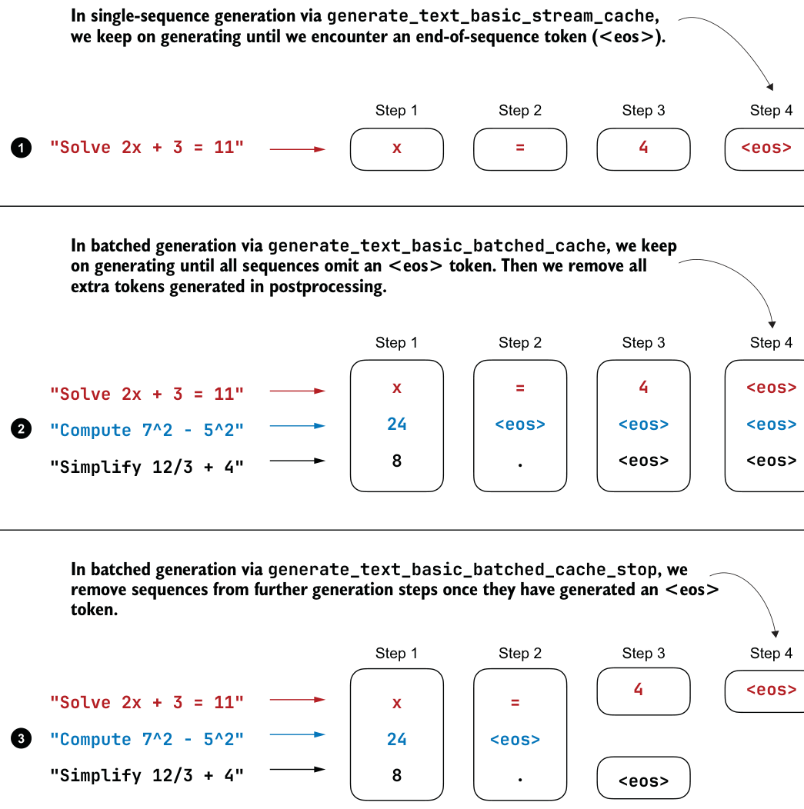
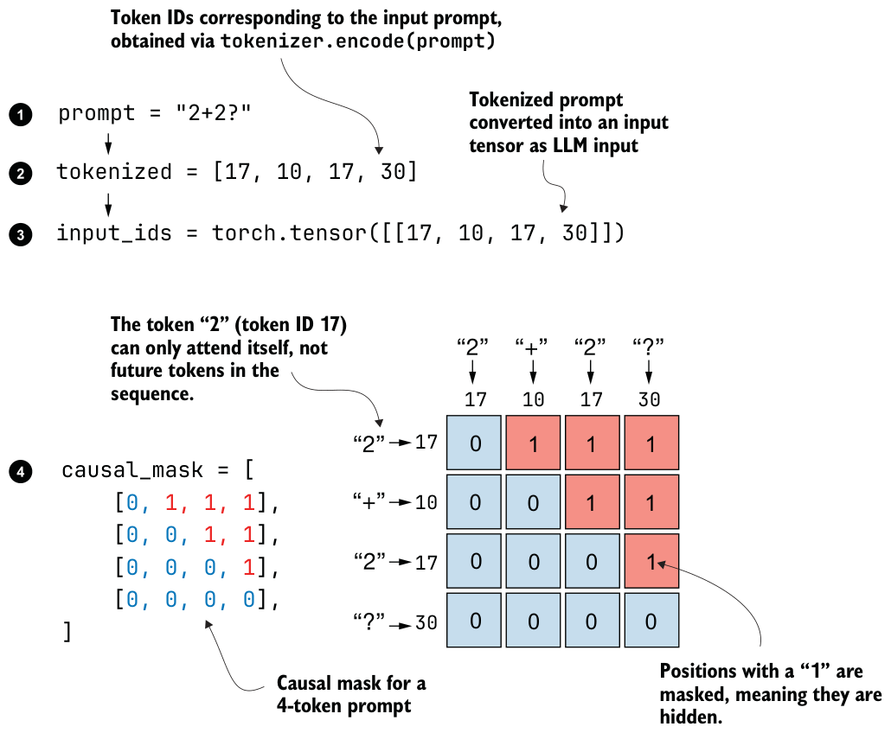
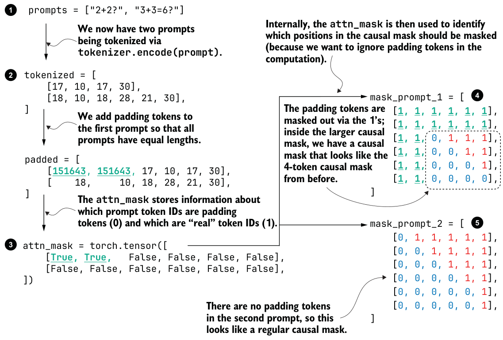

E.3Padding and attention masks
In single-example mode, if we tokenize a short prompt such as "2+2?", we can pass it to the model as a simple tensor of shape (1, 4):
input_ids = torch.tensor([[17, 10, 17, 30]])Internally, the model builds a standard causal attention mask so that each position can attend only to itself and earlier tokens. If you are unfamiliar with causal attention masks and self-attention, my article titled “Understanding and Coding Self-Attention, Multi-Head Attention, Causal-Attention, and Cross-Attention in LLMs,” provides more background information: https://magazine.sebastianraschka.com/p/understanding-and-coding-self-attention.
4
"Solve 2x + 3 = 11"
x
=
<eos>4
<eos>
x
=
"Solve 2x + 3 = 11"
24
<eos>
<eos>
<eos>
"Compute 7^2 - 5^2"8
.
<eos>
<eos>
"Simplify 12/3 + 4"In batched generation via generate_text_basic_batched_cache_stop, we4
<eos>
"Solve 2x + 3 = 11"
x
=
"Compute 7^2 - 5^2"
24
<eos>"Simplify 12/3 + 4"
8
.
<eos>
The causal attention mask for the "2+2?" prompt is illustrated in figure E.3. In the causal mask, the value 1 means “masked out” and 0 means “allowed.” In this figure, the first token cannot look ahead to later positions, the second token can look only at the first two positions, and so on. This is the standard autoregressive masking pattern.
Batching changes the situation because different prompts usually have different lengths. Suppose we process "2+2?" together with the slightly longer prompt,
"3+3=6?".obtained via tokenizer.encode(prompt)
prompt = "2+2?"tokenized = [17, 10, 17, 30]input_ids = torch.tensor([[17, 10, 17, 30]])17 10 17 30
17
causal_mask = [ [0, 1, 1, 1],
10
[0, 0, 1, 1],
17
[0, 0, 0, 1],
[0, 0, 0, 0],
30
]
Since PyTorch tensors must be rectangular, the shorter row has to be padded to match the longer one, as illustrated in figure E.4 with left padding.
Figure E.4 shows that we keep an additional attn_mask internally. This mask is used to keep track of the padded positions, where True means padded and False means not padded. We use this additional attn_mask to identify the tokens in the causal mask that correspond to pad token IDs. Masking padded keys and zeroing padded queries are important steps to make batching behave similarly to the single-example execution.
In the remainder of this appendix, you will see how to use scripts from the book’s supplementary materials that implement the optional batched variants for different chapters.
E.4Chapter 3: Batched MATH-500 evaluation
The book’s supplementary materials include a script for the single-example evaluation method from chapter 3 that you can download and run directly using the download function we introduced in chapter 7.
prompts = ["2+2?", "3+3=6?"]tokenizer.encode(prompt).tokenized = [ [17, 10, 17, 30],
mask_prompt_1 = [ [18, 10, 18, 28, 21, 30],]
[1, 1, 1, 1, 1, 1], [1, 1, 1, 1, 1, 1], [1, 1,
0, 1, 1, 1], [1, 1,
0, 0, 1, 1],padded = [
[1, 1,
0, 0, 0, 1], [151643, 151643, 17, 10, 17, 30], [1, 1,
0, 0, 0, 0],
[ 18, 10, 18, 28, 21, 30],
]
]mask_prompt_2 = [ [0, 1, 1, 1, 1, 1],
attn_mask = torch.tensor([ [0, 0, 1, 1, 1, 1],
[True, True, False, False, False, False],
[0, 0, 0, 1, 1, 1],
[False, False, False, False, False, False],
[0, 0, 0, 0, 1, 1],
])
[0, 0, 0, 0, 0, 1],
[0, 0, 0, 0, 0, 1],]
from reasoning_from_scratch.ch07 import download_from_github
download_from_github(
"ch03/02_math500-verifier-scripts/evaluate_math500.py"
)
download_from_github(
"ch03/01_main-chapter-code/math500_test.json",
out="math500_test.json",
)After downloading the script and dataset via listing E.3, we can run the single-example evaluation from the terminal as follows (if you are not using uv, simply replace uv run with python):
uv run evaluate_math500.py \
--dataset_size 500 \
--which_model "reasoning"The supplementary material also includes a batched version that applies the batching method we discussed previously. The download is almost identical, except that we
replace evaluate_math500.py with evaluate_math500_batched.py.download_from_github(
"ch03/02_math500-verifier-scripts/evaluate_math500_batched.py"
)The use of the batched script is very similar to the nonbatched version, except that we now provide an additional --batch_size argument to specify how many prompts and answers the model should process in parallel:
uv run evaluate_math500_batched.py \
--dataset_size 500 \
--which_model "reasoning" \
--batch_size 64The ideal batch size depends entirely on what your hardware can handle, so it’s best to start with a smaller value and scale upward until you hit the throughput and memory limit that makes sense for your setup.
We will return to a comparison of single-example and batched generation performance at the end of this appendix.